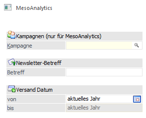
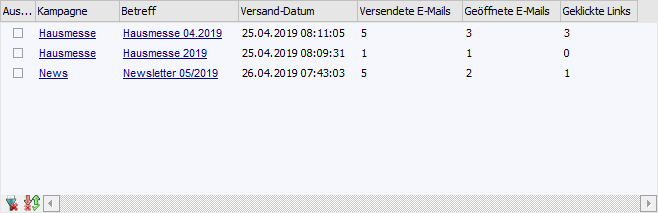
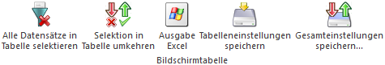

Selektion

Die folgenden Selektionen wirken sich auf den Inhalt der Tabelle im Register "Auswahl" aus, sobald der Button "Anzeigen/Aktualisieren" gedrückt wird. Die weiteren Register (z. B "Überblick ff.) werden im folgenden Abschnitt beschrieben.
Ø Kampagne
An dieser Stelle kann eine Selektion durch Angabe der Versand-Kampagne erfolgen. Zusätzlich zur manuellen Eingabe einer Kampagne gibt es die Matchcode-Funktion. Beim Öffnen werden jene Kampagnen angezeigt (bzw. können im Analysebereich ausgewertet werden), bei denen ein Versand über MesoAnalytics stattgefunden hat.
Ø Newsletter-Betreff
Mit Hilfe dieses Felds kann eine Selektion über den Betreff des E-Mail-Versandes erfolgen. Der Newsletter-Betreff kann, muss aber nicht eingegeben werden.
Ø Versand Datum von / bis
Hier erfolgt die Angabe des Versandzeitraums, welcher berücksichtigt werden soll. Standardmäßig wird hier das aktuelle Jahr vorgeschlagen. Anderer Zeiträume können durch Anwahl des Icons ausgewählt oder manuell eingegeben werden.
Tabelle im Register "Auswahl"

Durch Anwahl des Buttons "Anzeigen/Aktualisieren" wird die Tabelle gemäß der zuvor gewählten Selektion mit allen relevanten MesoAnalytics-Sendungen gefüllt. Das Füllen der Tabellen erfolgt absteigend nach Versand-Datum.
Achtung
Der Inhalt der Spalte "Geöffnete E-Mails" und "Geklickte Links" sind bereits MesoAnalytics-Daten. Damit diese Informationen dargestellt werden können, müssen die Daten durch Anwahl des Buttons ""MesoAnalytics-Daten aktualisieren" abgerufen werden.
Ø Ausgewählt
Durch Aktivieren der Checkbox wird die Sendung bei der Analyse (Register "Überblick" bis "Browser") grundsätzlich einbezogen. Des Weiteren werden die ausgewählten Sendungen bei Anwahl der Buttons "MesoAnalytics-Daten aktualisieren" und "MesoAnalytics-Daten löschen" berücksichtigt.
Ø Kampagne
An dieser Stelle wird der Name der Kampagne dargestellt. Per DrillDown (Doppelklick) wird diese im Fenster "Kampagne" geöffnet.
Ø Betreff
In dieser Spalte wird der Betreff der Sendung angezeigt. Per DrillDown (Doppelklick) wird die gesendete E-Mail im Standard-E-Mail-Client geöffnet.
Ø Versand-Datum
Hier wird das Datum der Versendung angezeigt.
Ø Versendete E-Mails
An dieser Stelle wird die Anzahl der gesendeten Mails dargestellt.
Ø Geöffnete E-Mails
In dieser Spalte wird ausgewiesen, wie viele der gesendeten Mails geöffnet wurden.
Ø Geklickte Links
Hier wird dargestellt, aus wieviel der gesendeten Mails ein Link angeklickt wurde.
Hinweis
Pro E-Mail wird nur ein Klick auf einen Link gezählt.
Tabellenbuttons

Ø Alle Datensätze in Tabelle selektieren
Beim Drücken dieses Buttons werden alle Datensätze (Sendungen) der Tabelle selektiert.
Ø Selektion in Tabelle umkehren
Durch Anklicken des Buttons "Selektion in Tabelle umkehren" wird die Option "Ausgewählt" bei allen Datensätzen in das Gegenteil gekehrt.
Ø Ausgabe Excel
Durch Anwahl des Buttons "Ausgabe Excel" wird der Inhalt der Tabelle an Microsoft Excel übergeben.
Ø Tabelleneinstellungen speichern
Die Spalten einer Tabelle können grundsätzlich an beliebige Positionen verschoben, bzw. in der Breite entsprechend angepasst werden. Durch Anwahl des Buttons "Tabelleneinstellungen speichern" werden die Einstellungen benutzerspezifisch gespeichert und bei dem nächsten Aufruf des Programmpunktes wieder vorgeschlagen.
Ø Gesamteinstellungen speichern
Im Gegensatz zu "Tabelleneinstellungen speichern" können mit "Gesamteinstellungen speichern" mehrere Tabellenaufbauten gespeichert und nach Wunsch geladen werden. Zusätzlich werden Sonderfunktionen der Tabelle (z.B. "Spalte gruppieren") ebenfalls bei der Speicherung bedacht.
Innerhalb dieses Registers werden die Spalten "Versendete E-Mails", Geöffnete E-Mails" und "Geklickte Links" durch die Betätigung des Ribbonbuttons "Details anzeigen" mit Informationen gefüllt. Zunächst müssen hier die Einträge selektiert werden, welche analysiert werden sollen.